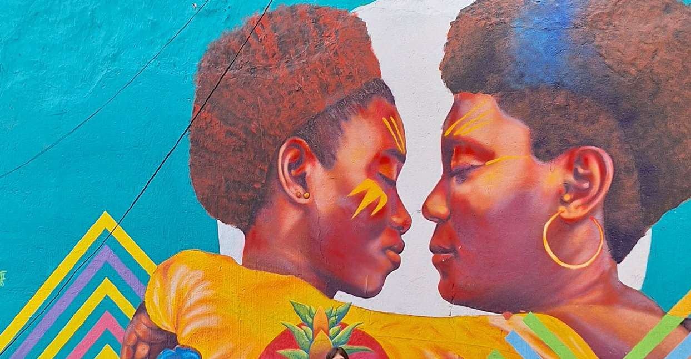

Lo que quiero
que vivamos juntas
Un viaje diseñado desde una mirada feminista y LBTQ+
Durante el recorrido trataremos de conocer la realidad LGTBQIA+ de la mano de asociaciones o personas locales y de acercarnos también a la mirada de las mujeres que viven allí. Y, por supuesto, cuidaremos que el grupo sea un espacio donde todas podamos viajar tranquilas, siendo nosotras mismas.
Una aventura con margen para improvisar
Hay un recorrido preparado, pero no quiero un viaje donde todo esté medido al minuto. Si encontramos un plan que nos gusta más, nos apetece quedarnos un rato más en un sitio o simplemente cambiar el rumbo, lo haremos siempre que sea posible.
Más confianza e independencia para seguir viajando
Me encantaría que este viaje también te diera la confianza para seguir explorando el mundo. Sola, acompañada o como tú prefieras. Compartiré recursos, aprendizajes y pequeños trucos que a mí me han servido para viajar con más seguridad y autonomía.
Viajar también es cuestionarnos
Durante el viaje intentaremos hacernos preguntas sobre la forma en la que viajamos y acercarnos a otras realidades con curiosidad y respeto. Trataremos de dejar a un lado esa mirada etnocéntrica con la que muchas hemos crecido y priorizaremos iniciativas locales y comunitarias que permitan conocer el destino desde otro lugar.
Una comunidad viajera, bibollera y con espíritu crítico
Me encantaría que Tukki Legui fuera mucho más que un viaje. Ojalá entre todas construyamos una comunidad de mujeres con ganas de viajar, cuestionarse cosas, compartir experiencias y seguir organizando aventuras juntas cuando volvamos a casa.